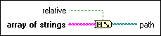

Array of Strings to Path Function
Owning Palette: Path/Array/String Conversion Functions
Requires: Base Development System
Converts an array of strings into a relative or absolute path.
If you have an empty string in the array, the directory location before the empty string is deleted in the path output. This behavior is similar to moving up a level in directory hierarchy.

 Add to the block diagram Add to the block diagram |
 Find on the palette Find on the palette |